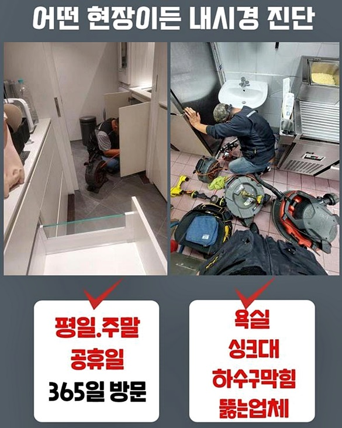
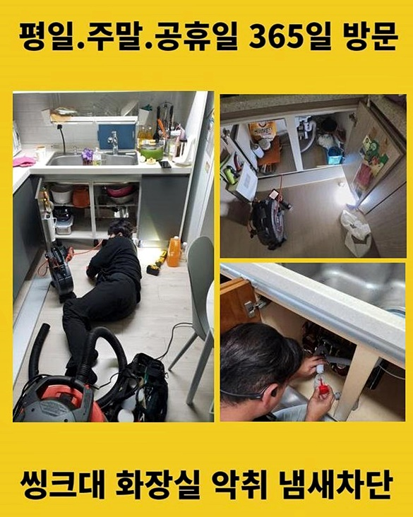
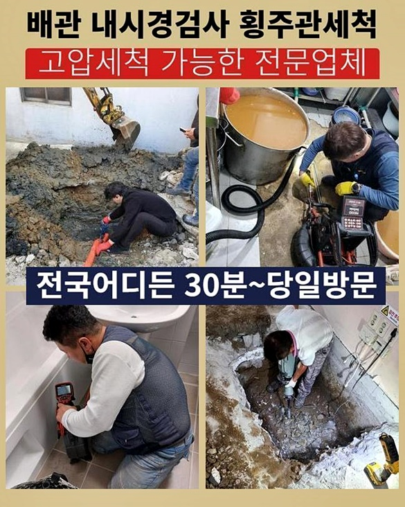
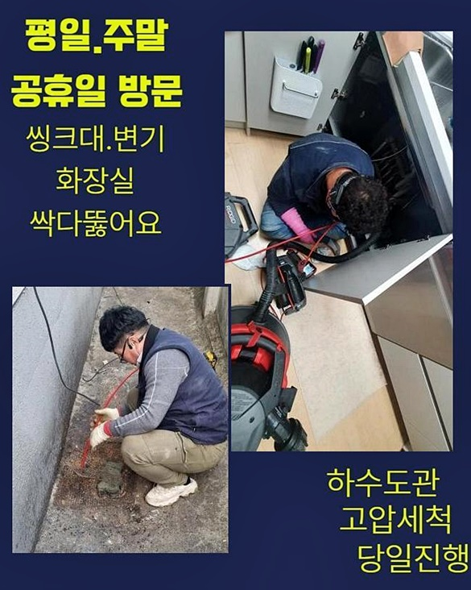
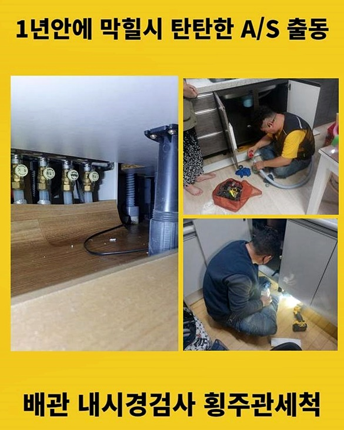
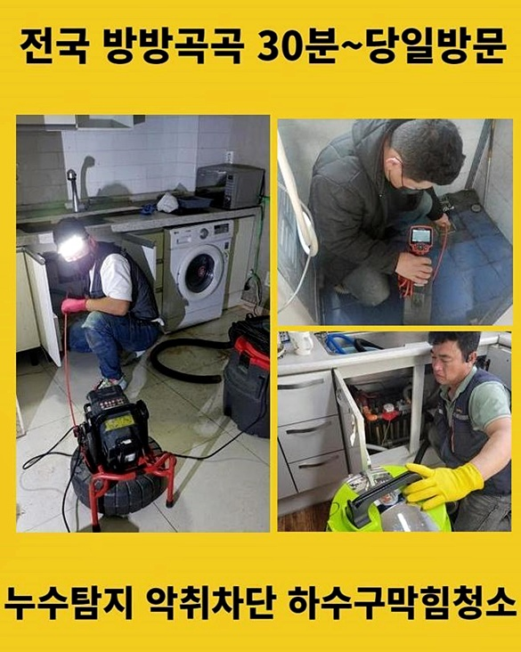
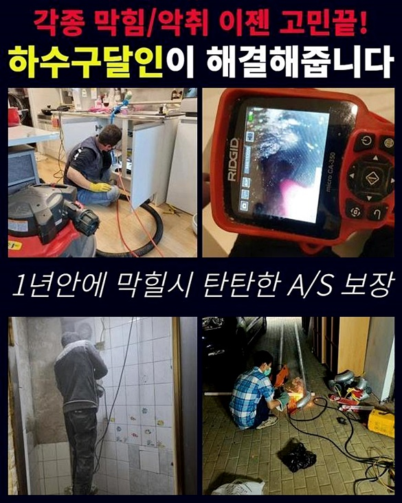

🏠 영등포 영등포동세탁기배수구막힘 양평동 배관뚫기 통수전문
용인시 처인구 배관막힘 전문 시공 후기

📋 작업 개요
- 위치: 용인시 처인구, 수원시 영통구, 화성시 동탄
- 서비스 유형: 배관막힘, 하수구청소, 고압세척, 내시경점검
- 작업 일시:
- 업체명: 하수구수사대 (010-5615-2118)
🔍 문제 상황
영등포 영등포동세탁기배수구막힘 양평동 배관뚫기 통수전문
배관막힘은 일상생활중에 번번히 발생하고있지만 직접해결하기 까다로운문제중 하나라고할수있어요
주로발생되는 싱크대는 기름슬러지들이 하수도내에 쌓이게되서 자주일어나곤해요
하수도가 막혀버릴때마다 전문가들을 호출해보는게 불편하다고 자가조치를 통해서 해결하고자 하시는분이 많습니다
잠깐동안의 효과가있겠지만 길게보면 올바른방법이 아니에요
현장사례를 토대로 뚫는과정을 보여드릴게요!
하수구막힘이 발생하는 근본원인부터 설명해볼게요
설거지를끝마치고 기름기와 남은물이 확실히 빠지지않고 정체되서 발생하는일이 자주있어요
대부분의 가정에선 빠르게 해결하고자 뜨거운물로 대처해보거나 주위에서 쉽게구하는 클리너제품을 부어보았지만 뚫리지않고 외려 역류까지 나타나기도해요
원활하게 배수가이루어지지 못한다고 다급하게 저희들을 찾아주셨어요
현장으로 방문드린후 빠르게문제를 살폈는데요
하부장쪽과 연결되어있는 주름호스를 뺀후 배관속에 석션장비를 투입해보았어요

🔎 원인 분석
💡 전문가 진단: 정밀 진단 장비를 사용하여 슬러지의 고착 여부를 판명하고 타격/세척 작업을 실시했습니다.
석션기계란 가정내에있는 청소기같이 비슷하다고 보시면되겠습니다
강력한힘을 토대로 오염물질이나 오수들을 제거하는방법이죠
하수구가 막히는경우는 앞선에 강조드렸듯이 오염물때문에 막혀버립니다
고로 빨아들여주는 석션을사용해 오염물이 얼마나찼는지 체크해가며 간단하게 막혀있는경우엔 석션만을통해 해결하고있어요
그렇지만 이번현장에서는 배관내부쪽에 오랜기간 쌓여왔었으므로 고착물질은 흡입해내지못하고 잔여물만 흡입이되었어요
다음과정은 배관카메라를 활용하여 안속을 파악해보기로했죠
육안으론 살필수없는 배관속을 들여다보려면 배관카메라로 투입해야만 한답니다
일부업체에서는 배관카메라없이 해결해보려는 경우도있죠
장비없이는 확인이불가한곳에 추가현상이 생겼을수도있으며 기계없이 무작위로 쑤시면 배관파손및 손상까지 다양한문제들이 발생될수있기 때문이랍니다
눈으로볼수없어 확실한 원인파악이 불가하여 재차막히는일이 일어날수있죠
하수구cctv기계를 활용해서 자세한 점검을해보니 예상했던바와같이 상당한이물이 발견되었어요
물이빠질틈이 보이지않았으며 그로인하여 싱크대또한 막힌걸로 추측할수있었네요

🔧 작업 과정
배수구카메라로 내부속을 들여다봤으면 뚫는작업으로 착수하게된답니다
배관구성이나 설계면에서 증상이나타난것이 아니었기때문에 하수구세척을 진행해야했습니다
샤프트기라는 도구를이용해 고착된 오염물부터 분쇄해내는 작업이 필요한데요
석션기만을 이용하여 소거하기 쉽지않은 고착물이있을때 분쇄기기를 활용하여 빨아들일수있도록 오염물을잘게 분해시키는거에요
내부에쌓여있는 고착물들도 분해시킬수있기에 필수요소의 장비라고할수있죠
분해작업을 마친후 석션과정을통해 잔여물질과 찌꺼기를 전부 제거한답니다
살펴보았더니 상당량의 오염물질들이 제거된상태임을 살펴볼수있었네요
오물만 빠져나왔던 모습관달리 제대로이루어진 하수구뚫음의 오염물제거를 착수한다고 알고계시면 좋겠습니다
슬러지만 조각낸뒤에 석션과정을 진행하지않으면 찌꺼기들이 뭉쳐서 크기자체가 커지게되어 다른배수구로 유입되는 위험도있기에 중간마다 석션과정으로 잔여물을 제거해내야해요
확실히 뚫으려면 내시경카메라와 석션도구및 샤프트장비까지 세가지단계로 순서대로 진행되야해요
하수구내시경을 써서 막힌이유를 알아내고 샤프트기로 분쇄하고 석션으로는 마무리과정을 진행한다고 생각해주시면 되겠습니다
슬러지때문에 막힌지점이 어딘지파악후 이범위를 중심으로 청소작업에 착수합니다
분쇄를진행한후 잔여물은 호스를지나 석션통으로 걸러지게된답니다
배관속에 잔류하지못하게 바깥으로 빼내주는거에요
본래는 슬러지로만 이루어졌지만 찌꺼기와 오물들이 뭉쳐지게되면서 단단한형태로 변한것이죠
안정적인 상태로 흘러갈수있는 오수들만 변기쪽에 흘려보낸뒤 큰석회의 경우에는 별개로처리하여 처리해주어야 한답니다
모든수리를 끝마쳤으면 막혀있던곳에 복귀한후 물을흘려보는 배수테스트를 통하여 확인하면됩니다
이전과달리 막히는것없이 흘러가는걸 확인한후 마칠수있었어요
오늘글에서는 가정내에서 하수구막힘이 발생했을때 어떠한 방법을통해 뚫는지 알려드렸는데요
셀프조치를 통해서 처리가 불가하다면 주저하지말고 전화주세요!


✅ 작업 완료
신속하게 출동해서 깔끔하게 처리하겠습니다
저희들을 믿어주시면 믿어주심에 보답할수있게끔 꼼꼼하게 작업에착수해 성공하는결과로 나타내겠습니다
어떤곳이든 1시간안으로 도착해드릴수있고 투명히 작업계획을 공개해드리므로 염려하지않아도 된답니다
막힘증상을 방치마시고 막힘을 알아낸즉시 해결해보시는것이 알맞은 대책이랍니다
이밖에도 해소되지않으신게 있을경우 편하실때 여쭈셔도되니 연락하시면 세세한상담으로 진행하려고하니 안심해주세요!




⚠️ 하수구 배관 막힘 예방 및 관리 가이드
- ✅ 머리카락, 비닐, 물티슈 등 물에 분해되지 않는 이물질은 절대 흘려보내지 마세요.
- ✅ 기름기 많은 식기는 설거지 전 키친타올로 먼저 기름때를 닦아내세요.
- ✅ 주기적으로 배수구에 뜨거운 물을 가득 부어주어 유지방 고착을 방지하세요.
- ✅ 작업 후 1년 이내 재발 시 무상 A/S 보증 서비스를 제공합니다.
💡 핵심 정리
- 확실한 장비 작업(내시경 점검 및 샤프트 스케일링)으로 원인을 뿌리 뽑습니다.
- 작업 후 1년 이내에 동일한 부위 재발 시 100% 무상 A/S 서비스를 보장합니다.
- 서울 · 경기 · 인천 전 지역에 24시간 언제든 긴급 출동할 수 있도록 항시 대기 중입니다.
❓ 자주 묻는 질문 (FAQ)
🚨 용인시 처인구 배관막힘 문제로 고민이신가요?
정확한 원인 진단과 확실한 시공으로 재발 없는 해결을 약속드립니다.
24시간 긴급 출동 | 서울 · 경기 · 인천 전지역 | 1년 내 재발 시 무상 A/S